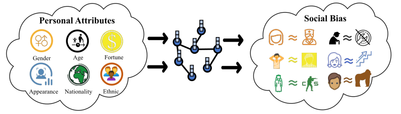
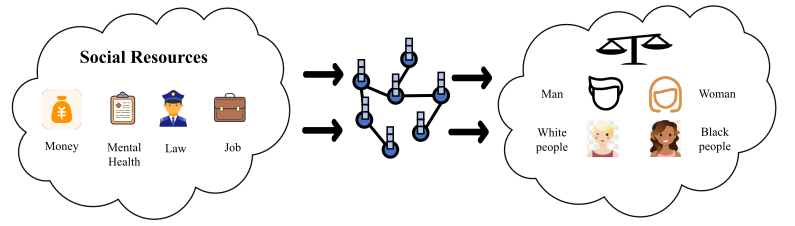
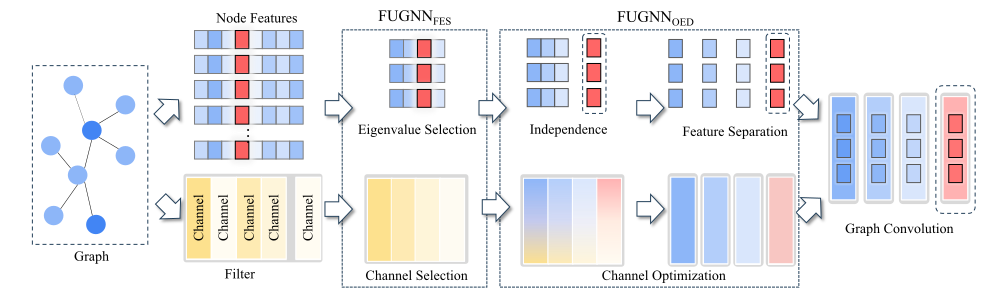

Responsible Graph Learning
Graph Learning has been increasingly applied in sensitive domains, making responsible usage crucial. Protecting personal data is vital for building trust and ensuring the well-being of vulnerable individuals and communities [355]. For instance, privacy-preserving graph learning must guarantee that confidential information, including model parameters and graph structures, remains secure. Therefore, how to simultaneously provide accurate individual-level information prediction and user privacy protection is a research problem of great value. A practical example would be a medical record system with a graph illustrating the social connections among patients affected by COVID-19 [356]. In such cases, it is imperative to protect patients’ sensitive personal data while training graph learning models on these graphs.
As an extension of neural networks on graph-structured data, GNNs are also vulnerable to adversarial attacks [357]. Due to their unique message-passing mechanism and graph structure, GNNs can be negatively affected by adversarial perturbations on both graph structures and node attributes. The vulnerability of GNNs has raised tremendous concerns about their adoption in safety-critical domains such as credit estimation and healthcare. For instance, fraudsters could create several transactions with deliberately chosen high-credit users to escape GNN-based fraud detectors, which could cause significant losses to individuals and institutions. Hence, developing robust GNNs is another important aspect of trustworthiness, and many efforts have been taken. This area is mature enough that several comprehensive surveys about adversarial attacks and defenses on graphs already exist. In this section, we provide a brief overview of adversarial learning on graphs but focus more on methods in emerging directions such as scalable attacks, graph backdoor attacks, and recent defense methods.
Fairness in graph learning refers to the elimination of any bias or favouritism toward specific individuals or groups in model predictions [358, 359]. Therefore, both individual fairness and group fairness need to be taken into account. To this end, different types of datasets have been proposed for studying different types of fairness.
As an extension of deep neural networks to the graph domain, GNNs are typically data-driven and aimed at learning mappings from graph-based data. However, the learning process, particularly mechanisms like message-passing, can inadvertently reinforce existing biases in the data, potentially leading to unfair predictions influenced by sensitive attributes such as race or gender [360]. Therefore, how to tackle unfairness issues in graph learning algorithms naturally becomes another crucial responsible problem. In this survey, we review responsible graph learning with a particular focus on Privacy-Preserving Graph Learning and Fairness in Graph Learning.
Privacy-Preserving Graph Learning
The growing use of graph learning in areas involving sensitive data has intensified privacy concerns [361]. For example, attackers can perturb a graph’s data to undermine a model’s effectiveness, or they can steal the model’s data and/or parameters, thus threatening the privacy of the model. Given the potential privacy risks linked to graph learning systems, a variety of privacy-enhancing techniques have been developed to address these challenges. This section will explore some of the most widely adopted approaches aimed at safeguarding privacy in graph learning.
Differential Privacy Based Methods
Differential Privacy (DP) [362], a well-established technique for privacy-preserving, ensures that an attacker cannot confidently infer private information about any specific training data from a released model. This guarantee of privacy is essential when developing privacy-preserving applications for graph learning. For example, consider a social smartphone application where the server stores information about users’ social interactions. While the server may wish to leverage private user data (e.g., usage logs) to enhance graph learning models for improved services (e.g., recommendation systems), it must ensure that raw user data remains inaccessible due to privacy concerns. Specifically, randomization is added to the data so that an attacker cannot infer private information from any differences in the query result. The formal definition of differential privacy is as follows [363]:
[365] presented a solution that focuses on node-level privacy through a two-component protocol: 1) Heter-Poisson, a specialized node sampling strategy that generates sub-graphs with desired properties, and 2) a randomization routine utilizing symmetric multivariate Laplace noise, offering a robust privacy guarantee. Additionally, the authors critiqued a prior approach [366] that utilizes differentially private node embeddings, highlighting fundamental privacy flaws and proving the impossibility of achieving both strong privacy and acceptable utility with such embeddings, thus underscoring intrinsic utility barriers in enforcing differential privacy.
To mitigate these privacy concerns, DP protocols are typically used. Standard DP approaches (e.g. DP-SGD [367]) are not suitable for GNNs due to potential privacy leakage from node label predictions based on neighboring attributes, and varying privacy requirements for node attributes and graph topology. To overcome these limitations, Graph Differential Privacy (GDP) [368] is designed specifically for graph learning, which ensures private model parameters and predictions while offering a unified notion of graph dataset adjacency for analyzing topology privacy. The proposed Differentially Private Decoupled Graph Convolutions (DPDGCs) provides a more flexible and efficient alternative to traditional graph convolutions, significantly improving privacy-utility trade-offs in extensive experiments across seven node classification benchmarks and synthetic datasets compared to existing DP-GNNs.
Federated Learning Based Methods
Federated Learning (FL) has become a widely adopted framework that allows decentralized entities, such as mobile devices, to collaboratively train machine learning models without exposing their raw data [369]. In FL, the data owned by these individuals is treated as private, and it is processed and trained locally, without being shared externally. To ensure privacy during training, a central server periodically collects and aggregates parameters (such as gradients or model weights) from each individual client until the model reaches satisfactory performance. Recently, there has been a growing interest in applying FL to the context of graph learning, with several studies exploring its potential.
FL-based graph learning safeguards the privacy of individuals by transmitting model parameters rather than raw data between participants and the central server during training [370]. This approach ensures that private data remains local and inaccessible to others. Specifically, each individual trains a graph learning model on their own data and subsequently uploads their local model to a server, which performs an aggregation function (e.g., FedAvg) to build a global GNN model. Notably, the aggregation process utilizes GNN parameters inductively, meaning the model remains independent of its underlying structure. Consequently, topological information about local graph data is not required, allowing it to remain private. However, unlike vanilla FL tasks (e.g. relies on Non-i.i.d data), FL-based graph learning presents unique challenges due to the nature of graph data. These challenges often necessitate carefully designed mechanisms during training and implementation, as outlined below:
i) Non-i.i.d. individual data: FL-based graph learning relies on stochastic gradient descent (SGD), making the training process vulnerable to non-i.i.d. data distributions [371, 372]. In practice, the heterogeneity in graph structures and node features across individuals introduces significant challenges. The non-i.i.d. nature of the local graph data (i.e., divergent graph structure and feature distributions) poses a major issue for FL with graphs. Consequently, many FL methods tailored for GNNs aim to mitigate the effects of non-i.i.d. data on training performance.
Federated learning has become a vital approach for training machine learning models across various domains, including graph-level tasks like graph classification, where graphs are treated as distinct data samples stored in separate local systems. Real-world graphs from multiple domains share statistically significant properties compared to random graphs, while different sets of graphs, even within the same domain, exhibit non-i.i.d. characteristics in terms of graph structures and node features. To address these challenges, SpreadFGL [373] is a novel framework that addresses key challenges in multi-client training, such as missing inter-client topology information and high training costs. SpreadFGL uses an adaptive graph imputation generator to discover potential relationships between clients without data sharing and incorporates a negative sampling mechanism to enhance task performance. The framework also supports distributed training for load balancing, enabling faster model convergence.
ii) Graph isolation: In horizontal intra-graph FL, local graph data can be viewed as isolated subgraphs from a latent global graph [374]. Since representation learning in graph learning relies on message passing between connected nodes, the inability to access private information from other subgraphs negatively impacts the accuracy. Current FL methods designed for graph learning address this issue by transmitting high-level domain representations rather than raw connections, or by employing generators to produce missing neighbors across distributed subgraphs.
FedSpray [370] learns local class-wise structure proxies in the latent space and aligns them to form global structure proxies at the server, aiming to provide reliable and unbiased neighboring information for improved node classification. FGL focuses on developing graph learning models across graph data distributed among multiple data owners, applicable in fields like social recommendation and financial fraud detection. Similar to traditional FL, FGL faces data heterogeneity issues, where label distributions can vary significantly across clients, leading to divergent local objectives that hinder convergence, particularly in node classification tasks. Additionally, FGL encounters challenges related to biased neighboring information for nodes belonging to minority classes, which affects the ability of GNNs to learn effective embeddings. FedSpray addresses these challenges.
Adversarial Privacy Preservation
To defend against attacks that attempt to infer sensitive attributes or links, adversarial learning is commonly employed in privacy-preserving graph learning. The main idea behind this approach is the introduction of an adversary, whose goal is to deduce sensitive information from the node representations produced by the encoder [375]. Meanwhile, the encoder is designed to generate node representations so that the adversary cannot infer sensitive attributes successfully. This process minimizes the shared information between the learned representations and the sensitive attributes, protecting against privacy leaks.
The balance between maintaining the utility of the learned model and preventing sensitive information leakage is achieved by minimizing a utility loss function, which ensures the graph learning performance in tasks like classification or reconstruction while maximizing the adversarial loss function to reduce the adversary’s ability to predict sensitive attributes [376]. Adversarial privacy preservation is first introduced to address the attribute inference problem, combining link prediction and node attribute prediction loss functions to maintain utility. In this approach, node attributes are predicted based on the learned representations, and losses from both link prediction and attribute reconstruction are combined to ensure the model is both useful and private.
[377] addressed fundamental theoretical and practical limitations of previous approaches in the graph learning setting. It reveals that flexible GNNs, which utilize learnable graph diffusion, can adapt to adversarial perturbations while maintaining an interpretable message-passing scheme. Additionally, the authors introduced a novel attack for structure perturbations that targets multiple nodes simultaneously and accommodates both global (graph-level) and local (node-level) constraints, ultimately demonstrating that adversarial training is a leading defence against such perturbations.
Robustness of Graph Learning
Graph learning models are increasingly vulnerable to adversarial attacks, making the development of robust graph learning a critical area of research. These defense strategies are generally categorized into three main approaches: Adversarial Training, Graph Denoising, and Certifiable Robustness. The following sections introduce key methods within each category, along with other notable defense techniques that fall outside these classifications.
Adversarial Training
This approach involves fortifying a graph learning model by exposing it to adversarial samples during the training process, a practice inspired by its success in computer vision. The core idea is to improve the model’s ability to resist attacks by explicitly incorporating adversarial perturbations into the training loop. This can be achieved in two main ways:
Min-Max Optimization: A graph learning is trained to simultaneously minimize its loss on both clean and adversarially perturbed data. This process can be formally expressed by the following equation:
This approach forces the model to learn a more robust decision boundary that is less susceptible to small, malicious changes in the input. For example, method like PerturbEmbedding adds an adversarial term to the loss function, encouraging the model to become more resistant to both structural and feature-based attacks. [378] proposed PerturbEmbedding that investigates the vulnerability of graph learning models to adversarial attacks that target both node features and graph structure. While acknowledging that existing adversarial training methods have shown promise in improving model robustness, they note that the application of these methods is often limited to specific datasets and model types. To address this limitation, they introduce a novel method, PerturbEmbedding, which applies adversarial perturbations directly to the hidden embeddings of graph learning models. This approach provides a unified and effective framework that enhances both the robustness and generalization of a wide range of graph learning models. By perturbing the hidden embeddings, the method forces the model to be resilient not just against input-level attacks, but also against malicious changes at intermediate layers, thereby creating a more robust and adaptable model.
Robust Pre-training: Some methods focus on pre-training the model on a large number of synthetically generated adversarial graphs before fine-tuning it on the clean graph. This allows the model to learn general robust features from a diverse set of attack scenarios. For example, a recent study proposes LLM4RGNN, which leverages the inference capabilities of LLMs to enhance a graph learning model’s robustness [379]. This framework distills the knowledge of a powerful model like GPT-4 into a local LLM to identify and remove malicious edges from the graph structure. It also uses an additional language model to predict and recover important missing edges, effectively "denoising" the graph to make it more resilient to topology-based attacks.
Graph Denoising
The goal of graph denoising is to purify the input graph before or during the graph learning model’s forward pass, effectively neutralizing adversarial perturbations. This approach is based on the assumption that malicious perturbations are a form of noise that can be filtered out. Denoising methods typically focus on cleaning either the graph structure or the node features.
Structure Denoising: These methods aim to identify and remove suspicious or harmful links in the graph. The process can be formulated as a joint optimization problem to learn a clean adjacency matrix, \(\mathbf{S}\), as shown below:
For instance, in real-world graphs, both structural noise (e.g., noisy edges) and a limited number of labeled nodes can significantly impair the performance of graph learning models. A recent framework proposed by [380] addresses this by using noisy edges as a form of supervision to learn a denoised and dense graph. This process effectively eliminates or down-weights noisy edges while simultaneously creating new, more meaningful connections that facilitate the message-passing mechanism. The framework then uses these newly generated edges to regularize predictions for unlabeled nodes, improving the overall training and robustness of the graph learning model, even when faced with significant data imperfections.
Feature Denoising: This involves applying a denoising operation to the node features to remove adversarial noise. For instance, some approaches use a pre-processing step to project the node features onto a low-dimensional subspace, where the adversarial perturbations are assumed to be less significant. A novel framework, DiffSP (Diffusion-based Structure Purification), offers a prior-free approach to this problem [381]. Instead of relying on assumptions about the attack, DiffSP uses a graph diffusion model to learn the inherent distribution of clean graphs. It then purifies a perturbed graph through a forward diffusion process (adding noise) and a reverse denoising process, where it removes adversarial noise under the guidance of the learned patterns. To avoid losing important information, DiffSP uses an LID-driven non-isotropic diffusion mechanism to selectively inject noise. The framework also promotes semantic alignment between the clean and purified graphs via a graph transfer entropy guided denoising mechanism, ultimately achieving robust graph learning without needing prior knowledge of the attack.
Certifiable Robustness
Unlike the first two categories, which provide empirical defense, certifiable robustness offers a mathematical guarantee that a graph learning model’s prediction will remain unchanged within a certain radius of perturbation. This provides a concrete measure of the model’s security. For a given node \(v \in \mathcal{V}\) with label \(y\), its robustness can be certified by solving the following optimization problem:
Randomized Smoothing: This technique, adapted from computer vision, involves adding random noise to the input graph and averaging the model’s predictions over many noisy samples. By doing so, it provides a provable robustness guarantee for the model’s output, ensuring that the prediction remains consistent as long as the perturbation is within a specified bound. Building on this idea, the node-aware bi-smoothing framework extends this technique to address a new challenge: certified robustness against graph injection attacks (GIAs) [382]. This framework is the first to provide a verifiable defense for general node classification tasks against GIAs, making it applicable for both evasion and poisoning attacks. The method is also model-agnostic, meaning it can be used with various graph learning architectures. The authors of this work provide a rigorous theoretical analysis to establish the certifiable conditions of their smoothing scheme and demonstrate its practical effectiveness as a defense against real-world attacks.
Interval Bound Propagation (IBP): This approach, inspired by IBP methods for neural networks, aims to compute a tight bound on a graph learning model’s output for all possible inputs within a given perturbation set. By ensuring that this output range does not cross a decision boundary, it can certify the model’s robustness against a wide range of attacks. A recent study addresses this challenge by applying a dual backpropagation network to deep graph learning [383]. The authors propose a novel method for calculating intermediate activation bounds based on a linear approximation, which effectively enhances verification accuracy and scalability. Their approach is shown to be capable of verifying the robustness of deep graph learning with up to \(32\) layers, demonstrating a significant improvement in the maximum perturbation value that correctly classified nodes can withstand.
In addition to these three main categories, other notable defense methods are emerging, such as those that leverage graph diffusion to disperse adversarial information or knowledge distillation to transfer robustness from a large, robust model to a smaller one. The continuous evolution of attack and defense strategies highlights the dynamic and critical nature of building trustworthy and robust graph learning systems.
Fairness in Graph Learning
Despite the success of various graph learning algorithms, many of them do not adequately address fairness considerations. As a result, these algorithms can produce discriminatory outcomes against specific populations when applied in human-centered contexts [72]. For instance, a job recommendation system based on social networks may inadvertently offer fewer opportunities to individuals of a particular gender or to those from underrepresented ethnic groups, as shown in Figures 7.1 and 7.2. Given the widespread application of graph mining algorithms, similar discriminatory practices may emerge in other high-stakes scenarios, such as disaster response, criminal justice, and loan approvals. In these situations, critical decisions that can significantly impact individuals’ lives are often made. Therefore, addressing fairness issues in graph learning algorithms is an essential challenge.


Group Fairness
In many high-stakes applications, such as loan approval systems, certain features—like race and gender—are legally protected to prevent misuse. Furthermore, in contexts like online social networking, users are often reluctant to share certain features, such as occupation and age. These features are classified as protected or sensitive attributes. Based on these attributes, populations can be categorized into different demographic subgroups, referred to as sensitive subgroups. Group fairness is then defined in relation to these sensitive subgroups, stipulating that algorithms should not produce discriminatory predictions or decisions against individuals belonging to any specific sensitive subgroup. [359] introduced a definition of fairness for a binary label \(y \in {0,1}\) and a binary sensitive feature \(s \in {0,1}\), where \(\hat{y} \in {0,1}\) represents the predicted class label.
Statistical Parity [384] (also known as Demographic Parity or Independence) requires that predictions be independent of the sensitive feature \(s\). This can be formally expressed as:
When both the predicted labels and sensitive features are binary, the degree of statistical parity is quantified by \(\Delta_{\text{SP}}\), defined as:
\(\Delta_{\text{SP}}\) measures the difference in acceptance rates between the two sensitive subgroups.
Equal Opportunity [385] demands that individuals in the positive class (i.e., those for whom \(y = 1\)) have an equal chance of receiving a positive prediction, regardless of their sensitive feature. In other words, for individuals with a positive ground truth label, sensitive features should not influence positive predictions. This can be formulated as:
Fairness-aware algorithms are designed to prevent biased outcomes based on an individual’s membership in a sensitive subgroup [385]. The degree to which predictions deviate from equal opportunity is quantified by \(\Delta_{\text{EO}}\), defined as:
Both \(\Delta_\text{SP}\) and \(\Delta_\text{EO}\) are evaluated on the test set to assess the fairness of the model [385].
Graph learning can produce biased predictions based on protected sensitive attributes, such as skin color and gender, due to historical biases in the training data. This discrimination can be exacerbated by the graph structures and the message-passing mechanisms inherent in graph learning, particularly in high-stakes applications like crime rate prediction. While extensive research has focused on fair classification with independently and identically distributed (i.i.d.) data, approaches for non-i.i.d. scenarios remain limited, especially since sensitive attributes are often scarce in real-world graphs. To tackle this issue, FairGNN [386] has been proposed to mitigate bias while maintaining node classification accuracy by leveraging limited sensitive information, and it employs local differential privacy to protect sensitive attributes. An extension, NT-FairGNN, further addresses the challenges of achieving fairness and privacy simultaneously, with theoretical analysis and empirical results demonstrating their effectiveness.
In addition, fairness-aware GNNs often navigate a complex trade-off between achieving fairness and maintaining utility. FUGNN [387] re-evaluates fairness using spectral graph theory, examining the relationship between sensitive features and the spectrum in GNNs, as shown in Figure 7.3. Through theoretical analysis, it identifies how directional similarity in eigenvectors associated with the largest eigenvalue can diminish the influence of sensitive features. Building on these insights, the proposed FUGNN harmonizes fairness and utility by optimizing eigenvector distribution and truncating the spectrum during encoding, ensuring that convolution has a reduced impact on sensitive features without significantly sacrificing performance.

In addition, Graph Transformers (GTs) typically neglect fairness considerations, leading to biased outcomes for certain sensitive subgroups. Due to their lack of message-passing mechanisms, traditional fairness-aware graph learning methods are not applicable to GTs. To address this, FairGT [388], a Fairness-aware Graph Transformer, is designed to alleviate fairness issues in GTs. FairGT utilizes a careful structural feature selection strategy and a multi-hop node feature integration method to ensure the independence of sensitive features, thereby enhancing fairness. The effectiveness of its fair structural topology encoding, which incorporates adjacency matrix eigenvector selection and multi-hop integration, is theoretically validated.
Individual Fairness
Compared to group fairness, Individual Fairness does not take sensitive features into account; instead, it emphasizes fairness at the individual level, such as for each node in graph data. The core principle of individual fairness is that similar individuals should be treated similarly, making it a more granular fairness notion than group fairness. However, there are currently only a limited number of graph mining algorithms that explicitly address individual fairness. Individual fairness is based on the understanding that similar individuals should be treated similarly.
Fairness Through Awareness [384] mandates that any two individuals who are similar should receive similar algorithmic outcomes from an algorithm. Let \(u,v \in \mathcal{X}\) be two data points in dataset \(\mathcal{X}\), and let \(f(\cdot)\) denote a mapping function. The formulation of fairness through awareness can be expressed as follows:
Algorithmic bias and fairness in graph mining have received limited attention, primarily focusing on group-based fairness notions. [389] introduced the first comprehensive study of Individual Fairness in Graph Mining (InFoRM), proposing a generic definition of individual fairness that leads to a quantitative measure of bias in graph mining results. It presents three complementary algorithmic frameworks to mitigate individual bias: debiasing the input graph, the mining model, and the mining results, all formulated from an optimization perspective. Additionally, they analyzed the impact of incorporating individual fairness on original mining results, developing an upper bound to characterize the associated costs.
REDRESS [390] approaches individual fairness from a ranking perspective by utilizing a similarity matrix \(\mathbf{S}\) to define pair-wise similarities among individuals in the input space. Each individual is associated with a ranking list \(\mathbf{R}1\) that reflects its relative similarity to others, while a corresponding list \(\mathbf{R}2\) is generated based on pair-wise individual similarities in the output space. Individual fairness is achieved when \(\mathbf{R}1\) and \(\mathbf{R}2\) match for each individual; however, this criterion is challenging to fulfill. As a practical measure, the average top-k similarity between \(\mathbf{R}1\) and \(\mathbf{R}2\) across all individuals is used to assess individual fairness, employing common ranking similarity metrics such as \(NDCG@k\) and \(ERR@k\).
[391] addressed classic randomized low-diameter decomposition procedures for planar graphs, which produce connected clusters by grouping nearby nodes with high probability. The authors introduced an additional fairness constraint: nodes at comparable distances should have similar separation probabilities. They demonstrated that traditional decomposition methods fail to meet this fairness criterion and propose novel algorithms that balance individual fairness with cluster connectivity and optimality. Additionally, the authors tied potential improvements in fairness bounds to a key unresolved question in metric embeddings and validated the proposed algorithms on real-world planar networks, including congressional redistricting tasks.
Graph Structure Fairness
Graph structural fairness is a relatively new concept in the graph mining community, distinguishing itself from traditional fairness notions. In networked data, connections between nodes can create dependencies that are informative for various graph mining tasks. However, low-degree nodes often provide limited information about their dependencies, making it challenging for graph mining algorithms to capture critical information compared to high-degree nodes effectively. For instance, the performance of GNNs in tasks like node classification typically varies significantly between high-degree nodes (e.g., a celebrity with many followers) and low-degree nodes (e.g., an average person with few followers). Graph structural fairness posits that nodes should achieve similar utility, such as classification accuracy, regardless of their structural characteristics.
GCNs are crucial in numerous real-world applications, yet they often suffer from performance disparities related to node degrees, resulting in lower predictive accuracy for low-degree nodes. [392] approached the issue of degree-related performance disparity in GCNs through the lens of the Rawlsian difference principle from distributive justice theory, aiming to balance utility between low-degree and high-degree nodes while minimizing task-specific loss. By analyzing the gradients of weight matrices in GCNs, [393] identified the root cause of this unfairness and proposed two methods: RawlsGCN-Graph for pre-processing and RawlsGCN-Grad for in-processing, both of which enhance predictive accuracy for low-degree nodes without altering the GCN architecture or adding parameters. Extensive experiments on real-world graphs demonstrate that RawlsGCN significantly reduces degree-related bias while maintaining comparable overall performance.
DegFairGNN [394] highlights the fairness issues in conventional GNNs that arise from neighborhood structures, in addition to sensitive attributes. While previous approaches have addressed bias from node attributes, they often overlook the impact of varying neighborhood structures, especially differences in node degrees, which can lead to biased node representations. To address this, DegFairGNN generalizes degree bias as a measure of multi-hop structural differences around nodes.